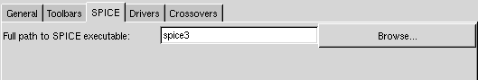

Crossover Configuration Settings
There are some configuration settings you should take a look at before you start designing you crossover network.

Figure 1: SPICE settings
Figure 1 shows the "page" in the settings dialog where you should enter the path to your SPICE interpreter. In my case I have SPICE installed in the prefix /usr/local/spice and the spice3 executable is in /usr/local/spice/bin. I have added this directory to my $PATH environment variable to make this as easy as possible. Instructions on how to install SPICE can be found in the installation instructions section of the reference manual.

Figure 2: settings for drivers
In figure 2 you can see the settings avaliable for a driver. If you have access to cone mass, effective radius, force factor, suspension resistance and suspension compleance you should check the Draw driver impedance plot-checkbutton. These parameters should be on the datasheet. If your datasheet lacks a parameter you can borrow a value from a similar driver if you can accept an unknown error in the impedance response curve. When you have entered these parameters you can check the impedance curve against the impedance curve in the datasheet. In the bass region it will not look like on the datasheet. However, in the midrange and tweeter region it will look similiar. The reason why the curves does not match in the bass region is that the impedance curve on the datasheet is measured in an enclosure while the impedance curve presented in GSpeakers is the impedance in free air. Of course this is a problem when it comes to design filters but unless you have a cutoff frequency lying on the peak around the drivers resonanse frequency this will not be a big problem.
The effective radius can easily be calculated from the cone area which should be on the datasheet. Also if you miss a couple of these parameters or if the impedance curve looks completely different from the impedance curve on the datasheet you should not use "the advanced driver model" when you design your filter. More about this later.
If you have entered the frequency response for a driver into GSpeakers you should check the other checkbox too. Then you will be able to use the driver notebook page as you use a map with datasheets.

Figure 3: crossover settings
Figure 3 shows the crossover page of the settings dialog. If got a pretty fast computer you should check the first checkbutton. On my AMD Athlon 1.4GHz this works nice. However, if you have got an old and slow computer you might not want to automaticly update the plots. It is also nice to be able to interactivly see how the frequency response of a filter change when you change the value of a component or the cutoff frequency.
The disable frequency amplification is a little bit special. Sometimes you can end up with a filter which in theory causes resonanses that makes the filter amplify the input to the filter. However, in the real world it does not work like that. Of course you can build a resonance circuit but mostly you will not be able to amplify the signal with a passive filter. Checking this setting will make GSpeakers throw away any amplification that may occur in a filter. I do not really know if this is the right way to threat this but I think this is a more correct model than simulating the filter with amplification. However, you should not design your filter to have amplification. Keep it as simple as possible and avoid sharp peaks and resonances.